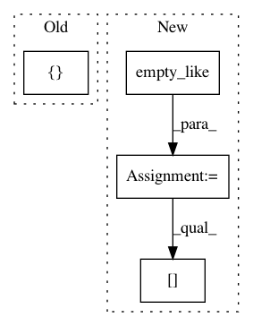

26b1ee9edf41b235911a82fb7955cd2af880d7ba,kymatio/scattering2d/core/scattering2d.py,,scattering2d,#Any#Any#Any#Any#Any#Any#Any#Any#Any#,4
Before Change
if max_order == 2:
output_size += order2_size
out_S_0, out_S_1, out_S_2 = [], [], []
U_r = pad(x)
After Change
output_shape = (x.shape[0], output_size) + S_0.shape[-2:]
print(output_shape)
S = empty_like(x, output_shape)
S[..., 0, :, :] = S_0.squeeze(-3)
n_order1 = 1
n_order2 = 1 + order1_size
for n1 in range(len(psi)):
j1 = psi[n1]["j"]
U_1_c = cdgmm(U_0_c, psi[n1][0])
if j1 > 0:
U_1_c = subsample_fourier(U_1_c, k=2 ** j1)
U_1_c = fft(U_1_c, "C2C", inverse=True)
U_1_c = modulus(U_1_c)
U_1_c = fft(U_1_c, "C2C")
// Second low pass filter
S_1_c = cdgmm(U_1_c, phi[j1])
S_1_c = subsample_fourier(S_1_c, k=2 ** (J - j1))
S_1_r = fft(S_1_c, "C2R", inverse=True)
S_1_r = unpad(S_1_r)
S[..., n_order1, :, :] = S_1_r.squeeze(-3)
n_order1 += 1
if max_order < 2:
In pattern: SUPERPATTERN
Frequency: 3
Non-data size: 4
Instances
Project Name: kymatio/kymatio
Commit Name: 26b1ee9edf41b235911a82fb7955cd2af880d7ba
Time: 2020-02-18
Author: janden@flatironinstitute.org
File Name: kymatio/scattering2d/core/scattering2d.py
Class Name:
Method Name: scattering2d
Project Name: mariogeiger/se3cnn
Commit Name: aa7c004df5c781fc3b5b8131d7a9e64fd196203e
Time: 2018-05-26
Author: geiger.mario@gmail.com
File Name: se3_cnn/non_linearities/scalar_activation.py
Class Name: ScalarActivation
Method Name: forward
Project Name: librosa/librosa
Commit Name: 7426dc59f863dfcc6c86e6b08174e65653fb23cb
Time: 2014-06-27
Author: brm2132@columbia.edu
File Name: librosa/decompose.py
Class Name:
Method Name: hpss